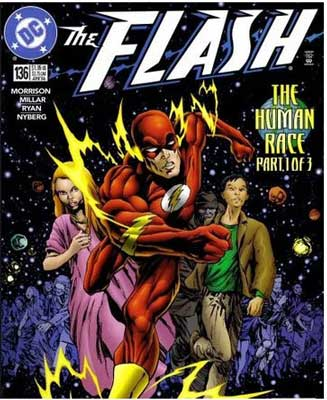
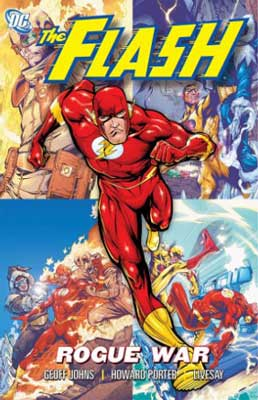
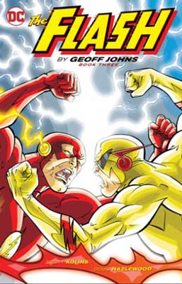
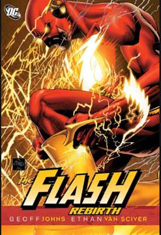
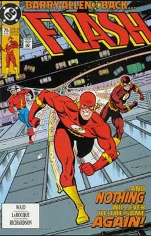

Autor del blog: Alejandro Gomez Garcia
Fecha de la publicacion: 18/02/2022 a las 8:30 pm
Creado por Gardner Fox y Harry Lampert,
el Flash original de la Edad de Oro debuta en el Flash Comics #1 (a la derecha) en 1940.
Jay Garrick es un estudiante universitario que, durante un descanso para fumar, accidentalmente
derrama su experimento científico de gases de "agua pesada". Inhala la sustancia, se desmaya y
ronda la muerte durante semanas… pero, finalmente, Garrick se recupera y nace Flash. Bendecido con
velocidad sobrehumana y reflejos, en su primera aventura Garrick se las apaña para matar a cuatro
enemigos.
Claramente inspirado por Mercurio, el veloz dios de la mitología romana, a Garrick incluso
le llaman la reencarnación de dicha divinidad en su primer número. Dios o no, Flash se convierte en un
personaje muy popular entre los lectores, defendiendo su ficticio hogar de Keystone City y uniéndose
pronto a sus heroicos compañeros en el supergrupo conocido como la Sociedad de la Justicia de América.
La rapidez Es el poder principal y del cual derivan muchos de los otros poderes del velocista.
Esta habilidad lo dota de una alta velocidad al moverse ya sea una parte de su cuerpo, su cuerpo
completo o cada una de sus moléculas.
En algunos casos se trataba de clones de SpeedForce y en otros de ilusiones ópticas de luz,
pero lo que sí se sabe es que flash ha sido capaz de crear varias copias de si mismo engañando a sus
contendientes usando simples señuelos
Los flash han demostrado su gran cantidad de poderes y habilidades que poseen con solo usar su velocidad
como inicio de todo, es capaz muchas veces de romper leyes de la física y de ser un gran héroe respetable.
Hasta el momento cada flash se especializa en un grupo de habilidades. Barry Allen: viajes interdimencionales
y viajes temporales, Wally West : Velocidad Extrema (es el más rápido y muchas de las habilidades la posee
solo el debido a que es el único en pasar la velocidad luz, ya que posee un contacto directo con la
SpeedForce) Bart Allen: control sobre la SpeedForce y sobre propio cuerpo.
Siempre espera lo mejor de las personas: cree en las segundas oportunidades y sabe que todos pueden cambiar.
|  Carrera por la humanidad |
 Guerra de los villanos |
 Blitz |
| Flash: Rebirth |
 El regreso de Barry Allen |